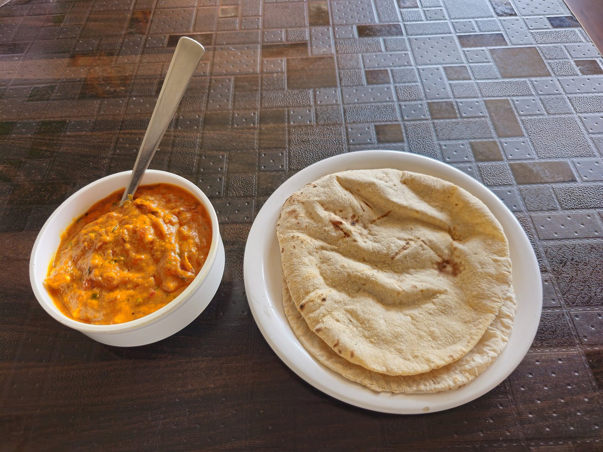
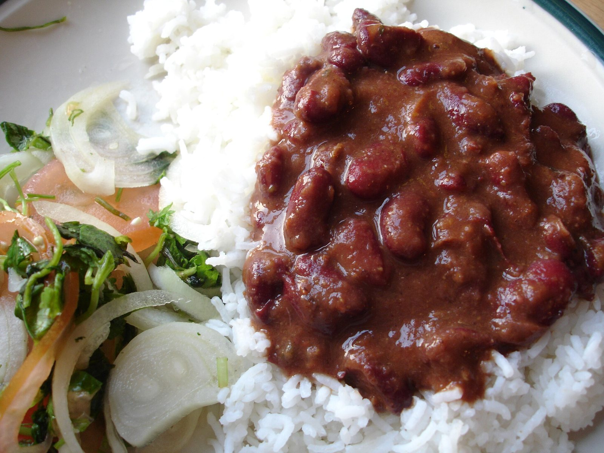
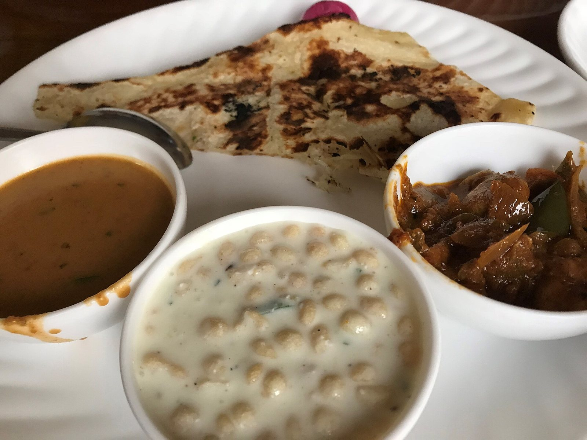

Ask a vegetarian friend where their protein comes from and you will usually hear one word: dal. Dal is a good start, but on a typical Indian vegetarian day it rarely adds up to enough protein for someone who trains or is trying to lose fat. This guide covers protein for Indian vegetarians: how much you need, which everyday foods carry it, and simple swaps that close the gap without changing what you eat.
It depends on what you want from your body:
To avoid deficiency: India's requirement for adults is about 0.83 g per kg of body weight a day (ICMR-NIN, 2020). That is around 50 g for a 60 kg person. It is a floor, not a target for training.
If you exercise: sports nutrition research recommends 1.4–2.0 g/kg a day (ISSN). For building muscle with strength training, the benefit levels off at around 1.6 g/kg on average (Morton et al., 2018).
While losing fat: more protein helps you keep muscle in a calorie deficit. For most people, 1.6–2.2 g/kg is a practical range.
FITR8 sets your daily target from the same evidence: 1.8 g/kg when your goal is fat loss, and 1.6 g/kg for muscle gain or recomposition. Here is what that means in grams:
Body weight |
Minimum (0.83 g/kg) |
Muscle gain (1.6 g/kg) |
Fat loss (1.8 g/kg) |
|---|---|---|---|
55 kg |
46 g |
88 g |
99 g |
60 kg |
50 g |
96 g |
108 g |
70 kg |
58 g |
112 g |
126 g |
80 kg |
66 g |
128 g |
144 g |
Want your own number? Try the FITR8 daily target calculator. It takes your goal, height, weight and activity into account.

Photo: Paneer butter masala with roti by Ganesh Mohan T, CC BY-SA 4.0, via Wikimedia Commons.
Good vegetarian sources are dals and other pulses (moong, masoor, chana, rajma, lobia), soya chunks, tofu, paneer, curd and hung curd, milk and buttermilk, peanuts, seeds and sprouts. If you eat eggs, they are an easy addition. Vegans can rely on soya, tofu, pulses, nuts and seeds.
Here is roughly how much protein common home-style servings carry. These are estimates from the FITR8 food database; your recipe and portion will vary.
Food |
Serving |
Protein |
|---|---|---|
Paneer curry |
1 katori (150 g) |
13.5 g |
Chole |
1 katori (150 g) |
10.5 g |
Dal tadka |
1 katori (150 g) |
9 g |
Rajma curry |
1 katori (150 g) |
9 g |
Toned milk |
1 glass (250 ml) |
8 g |
Curd |
1 bowl (200 g) |
7 g |
Boiled egg |
1 egg |
6.5 g |
Sambar |
1 katori (150 g) |
4.5 g |
White rice |
1 katori (150 g) |
4 g |
Roti |
1 roti (40 g) |
3.5 g |
Two things stand out. A katori of dal gives about 9 g, so it takes several servings to reach a training target. And the base of most meals (roti, rice, poha) adds a few grams each: useful, but not enough on its own.

Photo: Rajma with chawal by rovingI, CC BY 2.0, via Wikimedia Commons.
Plant proteins are slightly less digestible than animal proteins and lower in leucine, the amino acid most linked to muscle building. Eating cereals and pulses together, as in dal-rice, roti-dal or idli-sambar, gives a better mix of amino acids than either alone (ICMR-NIN). Soya is the most complete plant protein. In practice: mix your sources, and make the servings a little bigger.

Photo: North Indian vegetarian thali by Rajeeb Dutta, CC BY-SA 4.0, via Wikimedia Commons.
Here is a common vegetarian day for one person, and the same day with a few simple upgrades. Same kitchen, no supplements.
Meal |
Typical day |
Protein-smart day |
|---|---|---|
Breakfast |
Poha and masala chai |
Poha and a glass of toned milk |
Lunch |
2 roti, 1 katori dal, sabzi, 1 katori curd |
2 roti, 2 katoris dal, sabzi, 1 katori curd |
Evening |
Masala chai |
Masala chai and a bowl of curd |
Dinner |
2 roti, rajma, jeera rice |
2 roti, rajma, paneer curry (no rice) |
|
Protein |
about 55 g |
about 85 g |
That is about 30 g more a day from small swaps. Calories rise too, from roughly 1,640 to 2,070 kcal, mostly from the extra dal and the paneer curry. If you are losing fat, watch the oil and ghee in the curries and adjust roti portions to your calorie target.
For a 60 kg person aiming for 96–108 g, 85 g is still short. The easiest ways to add the last 20 g or so:
Add soya chunks or tofu to a sabzi, pulao or curry a few times a week.
Swap regular curd for hung curd: it is thicker, with more protein per spoon.
Snack on roasted chana, peanuts or sprouts instead of biscuits.
If you eat eggs, two boiled eggs add about 13 g.
A scoop of protein powder (whey, or soy or pea protein if you are vegan) is convenient, but never required.
Total daily protein matters most. Within that, aim for 3–5 meals with roughly 20–40 g each, every 3–4 hours (ISSN). For most Indian vegetarians that means making breakfast and the evening snack work harder, because lunch and dinner already carry dal.
For healthy people, research shows no harm to the kidneys from higher protein intakes. If you have kidney disease, or a doctor has asked you to limit protein, follow their advice instead of the ranges here.
Aim for about 1.6 g of protein per kg if you train, and about 1.8 g/kg while losing fat.
A typical vegetarian day lands around 55 g; small swaps take it to 85 g or more.
Pair pulses with cereals, lean on paneer, curd, milk and soya, and spread protein over 3–5 meals.
FITR8 shows your protein against your target as you log each meal, so you can see the gap and close it during the day, not after.
ICMR-National Institute of Nutrition. Nutrient Requirements for Indians (2020) and Dietary Guidelines for Indians (2024).
Jäger R, et al. International Society of Sports Nutrition Position Stand: protein and exercise. J Int Soc Sports Nutr. 2017;14:20.
Morton RW, et al. A systematic review, meta-analysis and meta-regression of the effect of protein supplementation on resistance training-induced gains in muscle mass and strength. Br J Sports Med. 2018;52:376–384.
Helms ER, Aragon AA, Fitschen PJ. Evidence-based recommendations for natural bodybuilding contest preparation: nutrition and supplementation. J Int Soc Sports Nutr. 2014;11:20.
Dal tadka by AugustineKajur, CC BY-SA 4.0, via Wikimedia Commons. (Cover image.)
Paneer butter masala with roti by Ganesh Mohan T, CC BY-SA 4.0, via Wikimedia Commons.
Rajma with chawal by rovingI, CC BY 2.0, via Wikimedia Commons.
North Indian vegetarian thali by Rajeeb Dutta, CC BY-SA 4.0, via Wikimedia Commons.
General fitness guidance, not medical advice.